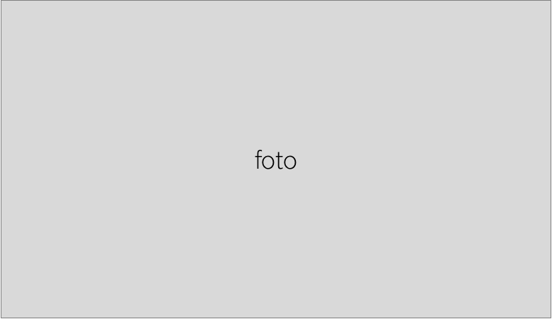

De Divers-IT website is gemaakt door een team van zes gemotiveerde informatiekunde studenten aan de Universiteit Utrecht, als eindproduct van het introductieproject dat het eerste jaar van de bachelor afsluit. Dit jaar had het introductieproject het thema diversiteit, wat op de één of andere manier in het eindresultaat moet terugkomen in de vorm van een verbetering van de maatschappij. Het idee voor de Divers-IT website ontstond door de realisatie dat er bij ons op de universiteit significant minder vrouwen dan mannen IT-gerelateerde studies zoals informatiekunde en informatica doen. Wij vroegen ons af waarom dat is, omdat wij ons eerste jaar informatiekunde wel erg leuk vonden. We werden nieuwsgierig: is dit een goede representatie van het aantal vrouwen dat in de IT werkt? En als dat zo is, hoe kunnen wij meer genderdiversiteit in de IT-sector brengen? Ons antwoord op die laatste vraag is Divers-IT.
Divers-IT is bedoeld om interesse te wekken voor IT-studies en IT-gerelateerde banen. Op deze manier proberen we mensen te laten zien dat IT niet alleen voor mannen is, maar voor iedereen. De Divers-IT website is voor iedereen bedoeld, want onze idealen zijn diversiteit en gelijkheid. We leggen dus de focus op mensen die zich identificeren als vrouw, zonder anderen buiten te sluiten.
Het Divers-IT team is hardwerkend, ijverig, gezellig, perfectionistisch, enthousiast en maakt veel (slechte) woordgrappen, maar onze echte namen zijn Daniëlle, Iris, Jos, Merel, Shannon en Annemik. Door ulteam teamwork is het idee voor Divers-IT binnen de span van tien weken uitgegroeid tot de website die het nu is. Motivatie waarom we de studie hebben gekozen
Wil je meer weten over het ontwerpproces van de website of over de teamleden, volg ons dan op Facebook of Instagram!